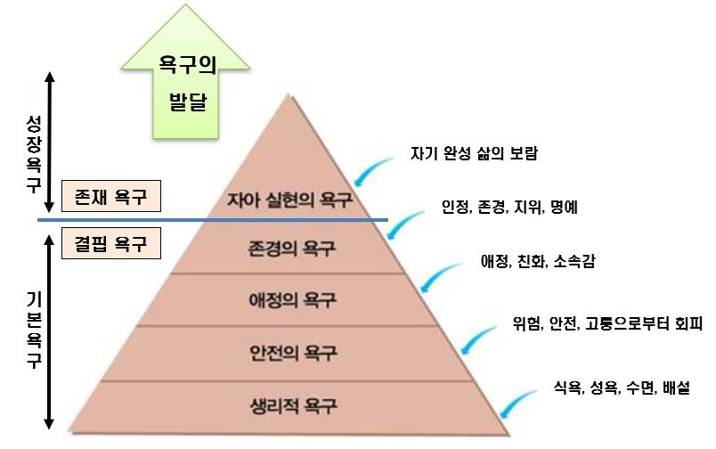
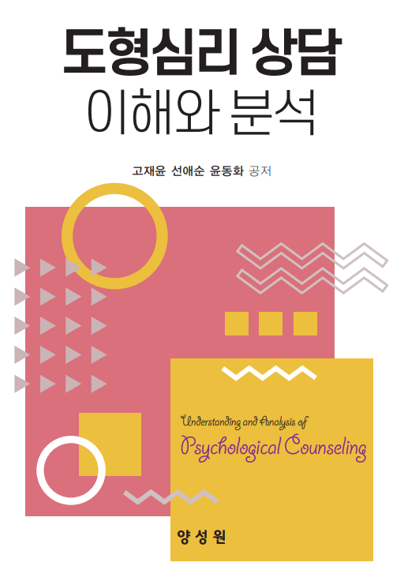

1. 매슬로우 욕구 5단계 이론의 의의
매슬로우(Maslow)가 제안한 욕구 이론(Maslow's hierarchy of needs)에서는 기본 욕구와 성장욕구 두 가지 형태로 구별하고 있다. 욕구발달에는 기본 욕구와 성장욕구로 구분한다.
첫째, 기본 욕구는 생리적 욕구, 안전의 욕구, 애정의 욕구, 존경의 욕구로써 결핍욕구이다.
둘째, 성장욕구는 자아실현의 욕구로써 자신의 존재를 나타내는 욕구 계층이다.
이러한 인간의 모든 욕구는 어떤 특정한 욕구를 다른 욕구들로부터 완전한 분리가 아니라 동기 유발과 충족을 통해서 자아실현하게 된다고 주장하였다. 이처럼 욕구의 종류 및 단계는 생리적 욕구, 안전의 욕구, 애정과 소속의 욕구, 자기존중의 욕구, 인지적 욕구, 심미적 욕구, 자아실현의 욕구이다. 인간의 하위 단계인 낮은 수준 욕구가 충족 되어야 다음 수준의 상위 욕구가 충족되면서 건전한 성장을 하게 된다는 피라미드형 구조이다
매슬로우의 욕구 5단계는 다음과 같다.

2. 매슬로우 욕구 5단계의 특징
1) 생리적 욕구단계
생리적 욕구(physiological neeeds)단계는 사람의 욕구 중에서 가장 기본적인 의식주 등 1차적이다.
선천적이고 본능적인 요소와 관련된다. 주로 생물학적 생존에 필요한 물, 산소, 수면, 배설, 음식, 성에 대한 생리적 욕구가 포함된다. 기본욕구가 충족되지 않으면 불신감이 형성되며 과식이나 폭식 등 고착 현상이 발생할 수 있다. 생리적 욕구는 기본적인 욕망을 이해하는데 매우 중요하다. 이것은 사람의 기본적인 생존에 중요한 삶의 동기가 되지만, 대부분 생활에서는 최소한의 역할을 수행하고 있다.
2) 안전의 욕구단계
안전의 욕구(safety needs)단계는 자기 자신을 질병과 위험으로부터 보호, 두려움에서 안전을 추구하는 단계이다.
일상적인 생활 주변으로 확대되어가는 것으로써 전쟁, 천재지변, 질병, 공포 등이 있다. 생활 주변에서 필수 불가결하게 작용되는 모든 요인을 제거하여 안전하게 삶을 추구하려는 욕구이다. 자신에게 낯선 사람, 자연 현상 등은 성격 및 대인관계 형성 등에 부정적인 영향을 미치게 되므로 주의해야 한다. 특히 안전의 욕구는 사람들의 생활에 중요한 요소로서 물질적, 정서·심리적 불안 욕구는 성인이 된 이후에도 영향력을 갖게 된다.
3) 애정의 욕구단계
애정의 욕구단계는 소속과 사랑의 욕구(belonging and love needs)이라고도 한다.
어떤 집단에 소속되어 서로 관계를 형성하고 인정받고 싶은 사랑의 욕구이다. 가족이나 집단에 대한 소속감, 우정, 친구들과 시간을 함께 보내는 것 등 생리적 욕구와 안전의 욕구가 충족되었을 때 나타난다. 이 욕구는 산업화, 도시화에 따른 사회적 이동성 증가로 인하여 점점 충족되기 어려워지고 있다. 애정욕구는 자신을 돌봐주는 부모와 신체적, 정서적 안전에 충족되면 주변의 다른 사람들과 사랑을 주기도 하고 받기도 하면서 관계를 맺는다. 이러한 욕구를 충족시키기 위해서는 개인이 조직, 단체, 집단 등에 가입하여 활동하는 것이 필요하다. 그렇지 못하게 되면 공허감, 적대감 등을 갖게 되며 부적응, 신경증, 정신병 등 원인이 되기도 한다.
4) 자존감의 욕구단계
자존감의 욕구(self-esteem needs)단계는 자신의 능력에 대해 긍정적으로 평가하려는 데에서 발생하는 단계이다.
자기존중은 능력, 개인적인 힘, 신뢰감, 성취, 독립, 자유 등을 포함하는 것으로 자신이 가치 있다고 생각하는 것이다. 다른 사람으로부터 존경, 명성, 인식, 지위 등이 포함된다. 자존감은 끊임없는 노력을 통하여 다른 사람들과 대인관계를 원만하게 지낼 수 있게 된다. 자존감에 대한 욕구가 만족되면 자신감, 자기존중, 힘, 능력, 적절성, 세상에서 유용하고 필요하다는 느낌을 갖는다. 그러나 만족되지 못하면 열등의식, 어리석음, 무력감, 좌절감, 자기비하 등을 유발시킨다.
5) 자아실현의 욕구단계
자아실현의 욕구(self-actualization needs)단계는 자기가 성취할 수 있는 모든 것을 성취하려는 제일 윗단계이다.
자아실현의 욕구 는 앞서 네 가지 욕구가 충족된 이후에 나타낸다. 이 단계는 자신의 능력, 재능, 잠재력을 충분히 발휘하기 위해서 많이 노력한다. 여러 번의 실패와 좌절에도 불구하고 끊임없이 자신의 잠재력을 펼치고 반드시 성취하게 된다.
자아실현의 욕구를 다양한 형태로 이루어지기 위한 몇 가지 필요한 조건은 다음과 같다.
첫째, 사회나 자기 자신에 부과된 강요로부터 자유로워야 한다.
둘째, 생리적 욕구나 안전의 욕구와 같은 낮은 수준의 욕구에 의한 혼란을 겪지 않도록 한다.
셋째, 자신의 이미지와 다른 사람들과의 관계에 확신이 있어야 한다.
넷째, 자신의 강점과 약점에 관한 실제적인 지식을 소유해야 한다.
이후 매슬로우는 위의 욕구 5단계 외에 6단계와 7단계까지 위계를 제시했다.
6단계는 자신이 알고자 하는 욕구와 이해하고자 하는 욕구이다.
지식을 습득하고 주변 세계를 분석하여 나름대로 이해의 틀을 마련하고자 하는 것은 지적인 사람이 갖는 욕망이다.
7단계는 미적·정서적 욕구이다.
사람들은 기본적으로 미적 욕구를 가지고 있어서 추한 것에는 불쾌감을 느끼고, 아름다움에는 유쾌해진다는 감정이다. 마지막 7단계는 질서, 대칭, 체계, 구조 등에 관한 인지적 발달을 향상시키는 욕구이다.
3. 매슬로우 욕구 5단계 이론의 시사점
1) 교육과 상담에서의 적용
학생이나 상담 대상자의 기본적인 욕구가 충족되지 않았다면, 그들이 더 높은 수준의 욕구, 예를 들어 학습이나 자기 발전에 집중하기 어려울 수 있다. 따라서 교육자나 상담사는 개인의 욕구 계층을 이해하고, 이에 맞춰 지원을 제공해야 한다.
2) 위기 개입 및 가족 상담에서의 의미
위기 상황이나 가족 내 문제에 직면한 개인들은 기본적인 안전과 안정성 욕구에 집중할 수 있다. 이러한 욕구를 인지하고 이에 대응하는 것이 위기 개입이나 가족 상담의 첫 걸음이 될 수 있다.
3) 개인 발달과 성장에 대한 통찰
개인이나 당신이 상담하는 아동 및 청소년들이 자신의 잠재력을 최대한 발휘하고 자아실현에 도달하기 위해서는 그들의 기본적인 욕구부터 차근차근 충족시켜 나가는 것이 중요하다. 이를 통해 그들이 더 높은 목표와 성취를 추구할 수 있는 기반을 마련할 수 있습다.
4) 복잡한 상황에서의 접근 방법
각 개인이나 가족이 처한 상황을 이해할 때, 매슬로우의 욕구 계층을 참고하면 복잡한 문제를 다루는데 도움이 될 수 있다. 예를 들어, 안전이나 소속감의 결여가 행동 문제나 정서적 어려움의 근본 원인일 수 있음을 인식하는 것이다.
출처; 고재윤,선애순,윤동화(2022). 도형심리 상담 이해와 분석. 양성원. p.67~70.

2021.11.28 - [분류 전체보기] - 프로이드의 발달 이론- 심리성적 발달 5단계
프로이드의 발달 이론- 심리성적 발달 5단계
심리성적 발달 5단계 프로이드(Sigmund Freud)는 성격발달 과정에서 중요한 영향을 미치는 성 에너지인 리비도의 과잉 및 충족 또는 좌절 및 고착에 따라 성격발달에 중요한 영향을 미친다고 주장하
think-sis.co.kr